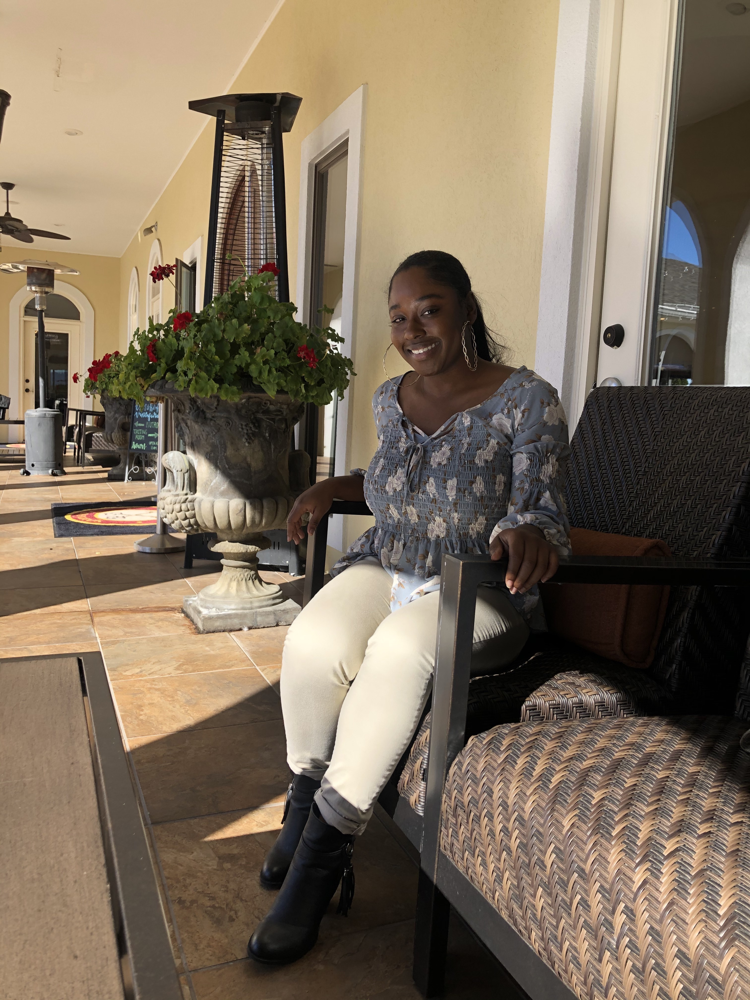

An adventurous explorer who runs the world around her.
My name is Nadeah "Dee" West. I am a Senior Media Arts and Design Major at James Madison University with a double minor in General Business and Communications. Because of my academic path I have a well-rounded background in design, business, and communications. It is now time to put my knowledge to the test in hands-on experiences. I love learning and am excited to learn how to do things in the real business world. I have taken many research courses. When I dont know a topic, then I know how to learn more about it and conduct research methods to obtain that knowledge. I dont have the traditional Business degree. Because my background is in interactive design, I have been taught how to best solve problems and look good while doing it. It isnt enough just to solve a problem. You need the research to spport it, ways to develop it, and then make it presentable in a way that everyone can understand. User experience research and design has taugh me all of these skills. Paired with my business and communications minors I am able to take a project from start to finish.

I am currently a full-time student at James Madison Univeristy. Outside of classes I am envoloved in the JMU Club Gymnastics team, the Lambda Iota Chapter of Sigma Gamma Rho Sorority, Incorporated, and the JMU Advertising Club. I have done gymnastics all my life and I knew that I wanted to continue this journey in college. Gymnastics was one of the main reasons I can to JMU. I have loved every minuite of being on the gymnastics team. I have met my bestfriends and current roommates from joinging the team. From practice to competting at nationals each year, gymnastics has provided a stress reliving enviornment that I am able to express myself. I joined Sigma Gamma Rho Sorority, Inc. my sophomre year of college. It is a multi-cultutral service based sorority that falls under the Interculltural Greek Council. I am currently the president which requires a lot of responsibility and time. If I am not in class or the library, then I am working on planning programs, hosting meetings, or doing service for my sorority. Lastly, I am a member of the JMU Advertising Club. Each year we make a marketing campaign for a business that we present and compete against other schools regionally. Ad Club gives real world marketing experience from the start of a campaign to the very end.